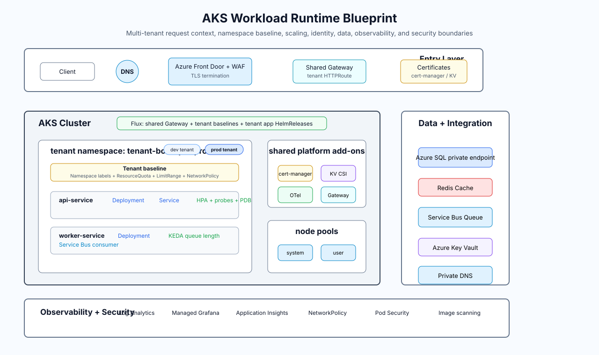

Multi-region AKS platform with tenant-aware workload boundaries.
The blueprint separates Azure infrastructure, Kubernetes platform controls, app releases, database security,
and platform SDK concerns while keeping the design suitable for public portfolio review.
Azure platform view: shared VPN access, regional AKS/data VNets, Private DNS coverage, and Azure SQL disaster recovery planning.

AKS workload view: shared Gateway, tenant namespace baseline, Flux HelmRelease ownership, node pools, data integration, observability, and security.
Network
VPN VNet for WireGuard Portal and operator entry.
Regional AKS VNets for system, app, ingress, and API server subnets.
Regional data VNets for private endpoints and database administration paths.
Private DNS links across VPN, AKS, and data VNets for private endpoint resolution.
Kubernetes
Platform-owned namespaces, quotas, limit ranges, and network policies.
App-owned Helm chart and Flux HelmRelease manifests.
Shared Gateway API with namespace label-based route attachment.
On-demand baseline capacity with NAP-managed spot scale-out.
Capacity Layers
System workloads stay on an on-demand system node pool. Critical tenant services run on a baseline
on-demand user pool, while selected burst workloads opt in to spot capacity through AKS Node Auto Provisioning.
Data Recovery Boundary
Azure SQL Failover Group is treated as an optional production/DR layer because the secondary database,
replicated capacity, and cross-region networking increase cost. The portfolio diagram documents the intended
RTO/RPO conversation without claiming the demo baseline runs a full production DR footprint.
Tenant Runtime Boundary
Tenant namespaces are prepared by the platform with labels, quotas, limit ranges, and network policy defaults.
Application teams release workloads through Flux HelmReleases after the shared Gateway and namespace baseline exist.